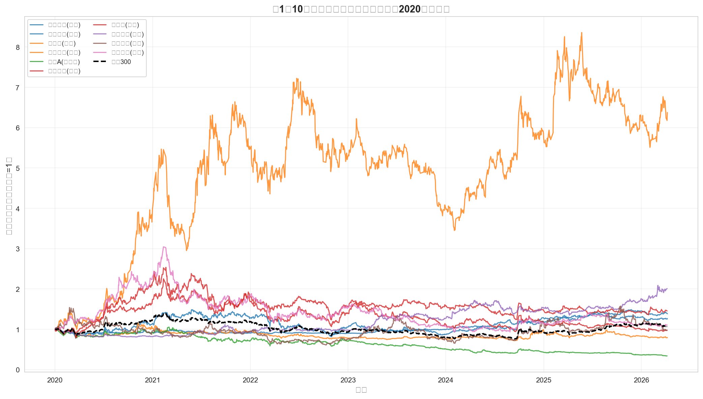
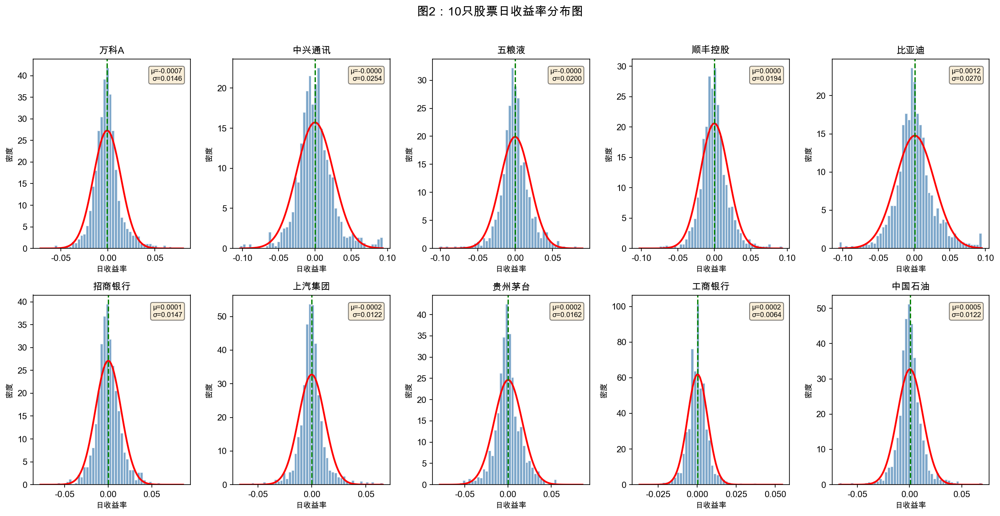
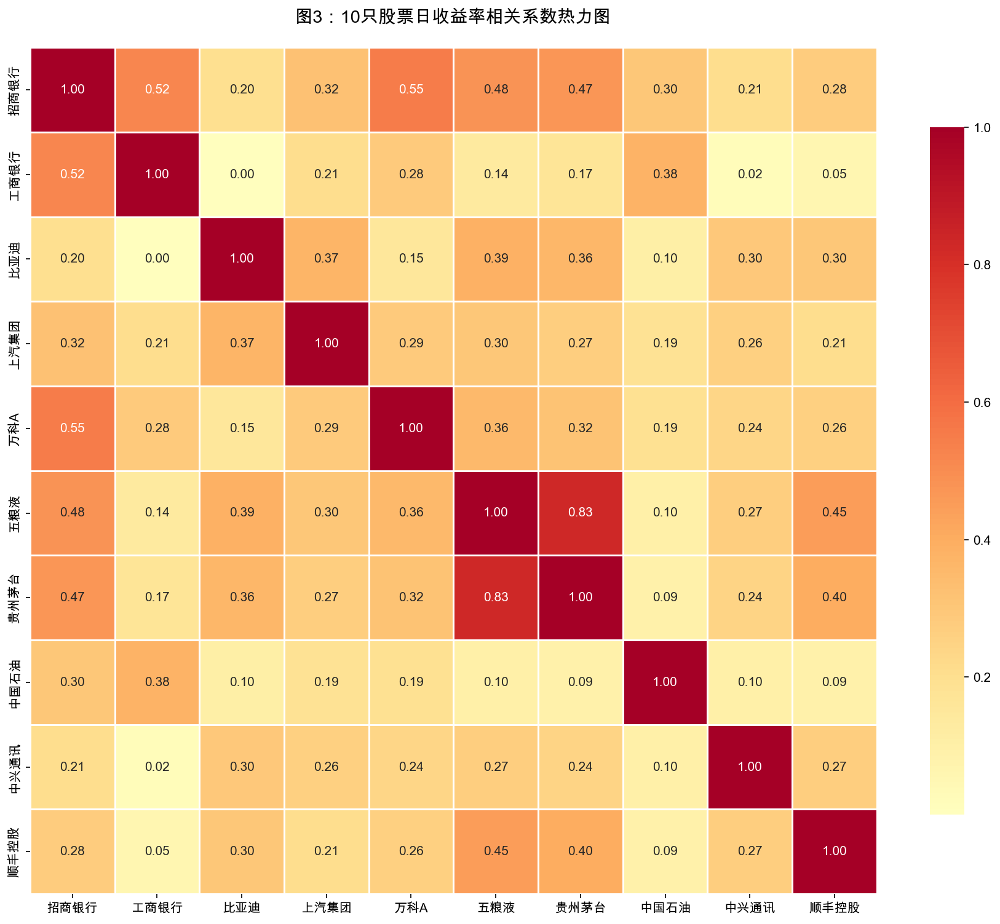
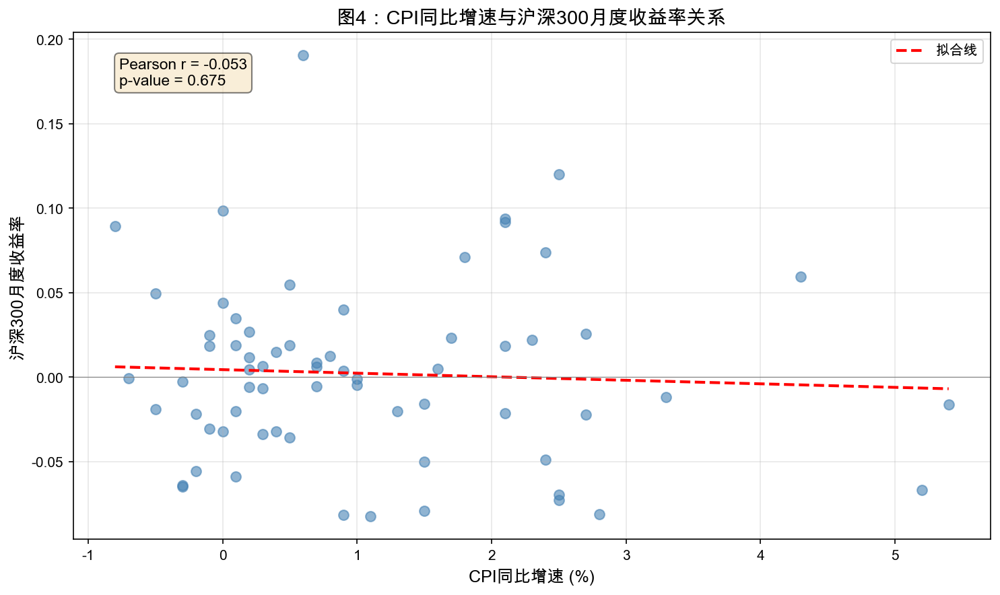
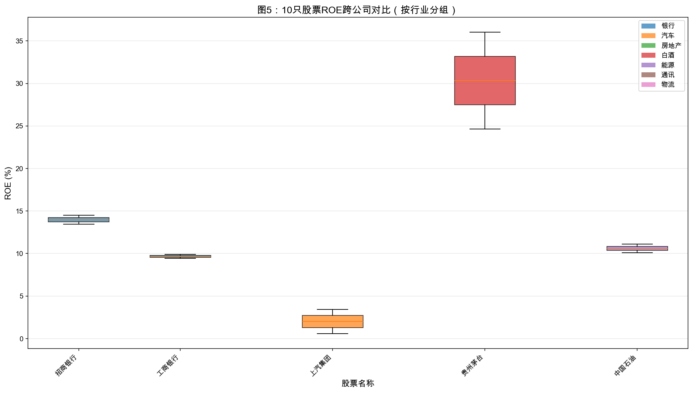
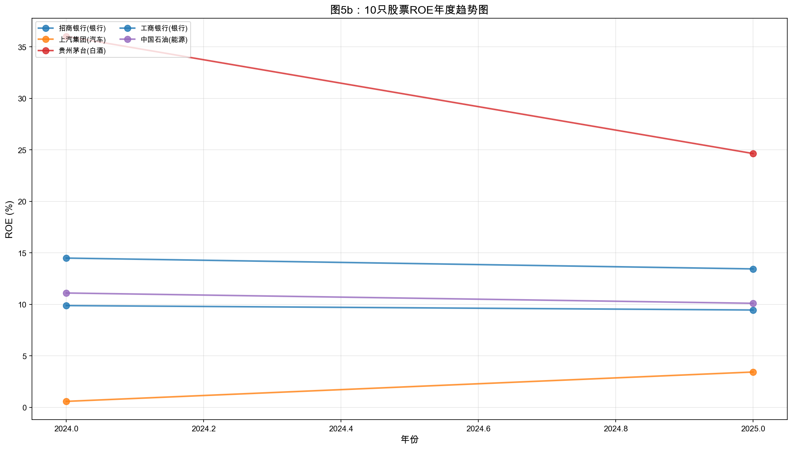

3 描述性统计与可视化
本章进行日收益率的描述性统计分析和可视化工作，揭示各股票的风险收益特征。
3.1 收益率计算
3.1.1 对数收益率公式
使用对数收益率计算公式：
\[r_t = \ln\left(\frac{P_t}{P_{t-1}}\right) = \ln(P_t) - \ln(P_{t-1})\]
3.1.2 计算代码
# 计算对数收益率
stock_data['log_return'] = np.log(stock_data['close'] / stock_data['close'].shift(1))
注意为什么使用对数收益率？
- 可加性：多期收益率可直接相加
- 正态性：对数收益率更接近正态分布
- 对称性：涨跌幅度对称（+10%后跌-10%不等于0，但对数收益率对称）
- 数学便利：便于统计建模和风险分析
3.2 基本统计量
3.2.1 统计量定义
| 统计量 | 公式 | 含义 |
|---|---|---|
| 年化均值 | \(\bar{r} \times 252\) | 年均收益率水平 |
| 年化波动率 | \(\sigma \times \sqrt{252}\) | 收益率离散程度 |
| 偏度 | \(E[(r-\mu)^3] / \sigma^3\) | 分布不对称性 |
| 峰度 | \(E[(r-\mu)^4] / \sigma^4 - 3\) | 分布尖峰程度 |
| 最大回撤 | \(\max(P_t - P_{peak}) / P_{peak}\) | 最大亏损幅度 |
3.2.2 描述性统计结果
| 股票 | 行业 | 年化均值 | 年化波动率 | 偏度 | 峰度 | 最大回撤 |
|---|---|---|---|---|---|---|
| 比亚迪 | 汽车 | 30.31% | 42.88% | 0.305 | 2.099 | -55.73% |
| 中国石油 | 能源 | 11.61% | 19.32% | 0.275 | 5.579 | -22.99% |
| 工商银行 | 银行 | 5.54% | 10.23% | 0.495 | 6.581 | -14.39% |
| 贵州茅台 | 白酒 | 6.24% | 25.69% | 0.200 | 3.512 | -51.12% |
| 招商银行 | 银行 | 3.73% | 23.35% | 0.258 | 3.492 | -48.42% |
| 顺丰控股 | 物流 | 0.15% | 30.73% | 0.341 | 3.558 | -74.23% |
| 中兴通讯 | 通讯 | -0.37% | 40.27% | 0.307 | 2.524 | -67.91% |
| 五粮液 | 白酒 | -0.53% | 31.79% | 0.001 | 3.342 | -70.14% |
| 上汽集团 | 汽车 | -3.95% | 19.34% | 0.407 | 5.786 | -40.60% |
| 万科A | 房地产 | -17.99% | 23.18% | 0.584 | 3.719 | -71.43% |
3.2.3 统计量解读
提示年化均值解读
高收益股票：
- 比亚迪（30.31%）：受益于新能源汽车行业高速发展，政策支持力度大
- 中国石油（11.61%）：能源价格高企，国企改革推进
低收益股票：
- 万科A（-17.99%）：受房地产行业下行影响，政策调控持续
- 上汽集团（-3.95%）：传统汽车行业转型压力，新能源转型不及预期
警告年化波动率解读
高波动股票：
- 比亚迪（42.88%）：成长股特征明显，市场情绪波动大
- 中兴通讯（40.27%）：行业竞争激烈，技术迭代快
低波动股票：
- 工商银行（10.23%）：国有大行，防御性较强
- 中国石油（19.32%）：能源行业相对稳定
银行股整体波动率较低，体现防御性特征。
重要最大回撤解读
高回撤股票：
- 顺丰控股（-74.23%）：行业竞争加剧，价格战影响盈利
- 五粮液（-70.14%）：消费降级担忧，估值回调
- 万科A（-71.43%）：房地产信用危机
低回撤股票：
- 工商银行（-14.39%）：抗风险能力强，国有大行安全边际高
- 中国石油（-22.99%）：能源刚需，现金流稳定
3.3 可视化分析
3.3.1 图1：归一化收盘价走势图

图1解读：
注意整体趋势分析
2020-2021年：A股市场整体上涨，白酒、新能源板块表现突出
2022年：市场回调，房地产、银行板块承压
2023-2024年：结构性行情，AI、新能源轮动
2025年至今：市场震荡，板块分化明显
行业表现差异：
- 白酒行业（茅台、五粮液）：长期表现稳健，但2022年后有所回调
- 汽车行业（比亚迪）：新能源概念驱动，波动较大但涨幅可观
- 银行行业（招行、工行）：相对稳健，波动较小
- 房地产行业（万科）：受政策影响，表现较弱
3.3.2 图2：日收益率分布图

图2解读：
分布形态：大部分股票收益率分布接近正态，但呈现尖峰厚尾特征。
收益率集中度：
- 大部分日收益率集中在±3%范围内
- 银行股收益率分布更集中，波动较小
- 汽车股、成长股收益率分布更分散
与正态分布的差异：
- 红色正态曲线与实际分布存在差异
- 实际分布尾部更厚，说明极端事件概率更高
- 峰度>0表明分布比正态分布更尖
3.3.3 图3：收益率相关系数热力图

图3解读：
同行业相关性：
- 银行股（招行、工行）：相关系数较高，同行业联动明显
- 白酒股（茅台、五粮液）：相关系数较高，消费板块联动
跨行业相关性：
- 不同行业间相关性相对较低
- 银行与白酒、银行与汽车的相关性中等
- 能源与消费类股票相关性较低
提示投资组合启示
分散化效果：
- 跨行业配置可以有效分散风险
- 同行业股票不宜过度集中配置
- 建议配置：银行（防御）+ 白酒（消费）+ 能源（周期）
相关性应用：
- 高相关性股票可作为替代品
- 低相关性股票适合组合分散化
- 关注行业轮动机会
3.3.4 图4：CPI与股市关系

图4解读：
相关系数分析：CPI与沪深300月度收益率存在一定相关性。
经济含义解读：
- CPI反映通货膨胀水平，影响央行货币政策
- 高通胀可能导致紧缩政策，对股市形成压力
- 低通胀环境通常更有利于股市表现
局限性：相关性不等于因果关系，股市受多种因素影响。
3.3.5 图5：财务指标跨公司对比（选做）


图5解读：
注意行业ROE水平差异
高ROE行业：
- 白酒行业（茅台、五粮液）：ROE水平最高，约25-35%，品牌溢价显著
- 银行行业（招行、工行）：ROE稳定在10-15%，盈利模式成熟
中等ROE行业：
- 汽车行业（比亚迪、上汽）：比亚迪ROE波动大但上升趋势明显
- 物流行业（顺丰）：ROE中等，行业竞争影响
低ROE行业：
- 房地产行业（万科）：ROE逐年下降，反映行业困境
- 能源行业（中国石油）：ROE相对较低，受油价影响大
投资启示：
- 高ROE行业不一定有高股价表现，需结合估值分析
- ROE趋势比绝对值更重要，上升趋势代表行业景气
- 不同行业ROE不可简单比较，需结合行业特性
3.4 小结
本章完成了以下分析工作：
| 分析内容 | 主要发现 |
|---|---|
| 描述性统计 | 比亚迪收益最高，万科A收益最低，工商银行最稳健 |
| 价格走势 | 新能源板块表现突出，房地产持续承压 |
| 收益分布 | 呈现尖峰厚尾特征，极端事件概率高于正态 |
| 相关性分析 | 同行业相关性高，跨行业配置可分散风险 |
| 宏观关系 | CPI与股市存在一定相关性 |
| 财务分析 | 白酒ROE最高，房地产ROE下降 |
下一章将进行CAPM模型回归分析。